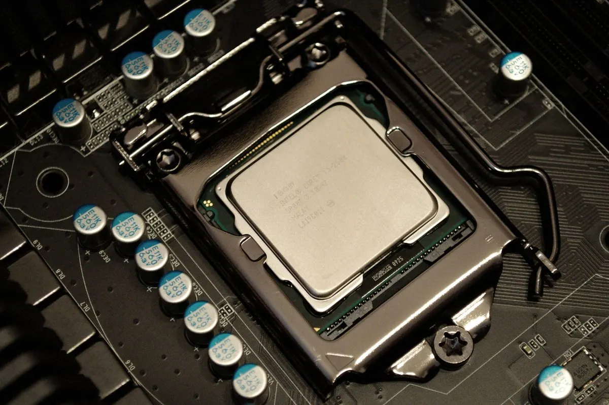

Unidad central de proceso: lee, decodifica y ejecuta las instrucciones del software a máxima velocidad.
- Claves: núcleos/hilos, frecuencia (GHz), caché y socket.
- Ejemplos: Intel Core i5 / AMD Ryzen 5.
- Cuidado: requiere disipador y pasta térmica bien aplicadas.